Warm afternoons matter. So do the streets you walk, the restaurants you return to, and the feeling of living in a town with its own life.
9 coastal regions45 location photographs2? stays to consider
Cap Ferret is the reference for understated coastal life. None of these places is a complete equivalent, and no mainland choice here promises dependable 20–22°C winter days.
The decision / warmth and atmosphere together
Dénia deserves a closer look. Altea needs a more qualified recommendation.
What changed after checking the atmosphere
Dénia has the stronger evidence for everyday winter food and town life. Altea has a genuine arts identity and a picturesque old town, but it should not share an automatic top ranking on temperature alone.
Equally, proximity to Benidorm is not evidence of the same social scene. Neither town has been established as dominated by British pubs, and neither is promised British-free.
The stronger Spanish reference stations average around 17–18°C daily highs. The eastern Algarve is around 16–17°C. French Mediterranean and Tuscan references are generally cooler.
A monthly average daily high is the day’s typical maximum, not an all-day temperature or a forecast. Shelter, sun, wind and heating matter; a few tenths of a degree should not decide the town.
Average daytime highs: January / February · drive from Coquelles terminal
Driving figures were checked in Google Maps on 15–16 September 2026, avoiding ferries with tolls/highways allowed. They exclude the UK leg, Channel crossing, breaks and nights. They are current routing results, not winter traffic predictions. The earlier southern Spain / Portugal references are just over a strict 20-hour cap. Earlier routes · New routes.
A possibility / not a fixed itinerary
Two stays could reduce the compromise.
Use two bases to experience different daily routines, without committing the whole winter to a place whose atmosphere is still uncertain.
First base to investigate: Dénia
Look for an actual house and garden with a usable walk to town restaurants and the coast. The centre, Baix la Mar and near Marineta Cassiana deserve separate address-level checks. A distant Les Rotes villa is not automatically the same proposition.
Second base: still open
La Herradura offers a bay-and-promenade comparison; Tavira offers Portuguese town life, with different beach access and a longer drive. Both need a stronger check of the immediate winter social scene and rental location before selecting them.
Altea could be a visit from a Costa Blanca base before choosing a separate stay. Tuscany is a much larger temperature compromise.
No dates, split, pairing or transfer route selected. Two stays mean another move and two property checks; they do not make the weather warmer. If 20 hours is a hard limit, keep the over-cap southern references as comparisons rather than assuming they qualify.
The visual guide / five photographs per region
Look beyond the beach.
Town streets, working waterfronts, beaches and landscape. Captions identify the actual location, so neighbouring towns do not quietly stand in for one another.
Photographs span different years and seasons. They illustrate places, not typical winter weather or current opening. Tap any photograph to view it larger.
01 / Dénia: candidate for one stay
Costa Blanca
Dénia · Altea
17.0 / 17.6°CJanuary / February average highsAlicante city · 1981–2010
Dénia harbour and castle at dusk. 2017-08-08 21:30:08. Pau Nofuentes Sendra / Commons, CC BY-SA 4.0.A narrow street in Altea's old town. 2007-03-11. Astronautilus / Commons, CC BY 2.0.Sierra Helada seen across the coast from Altea. Source date: 2013-12-17 13:10:15. Aglaya Photography by Armando Gonzalez Alameda / Commons, CC BY-SA 4.0.Dénia beach. Source date: 20 December 2016, 18:22:49 (UTC). Noah Stride / Commons, CC BY 3.0.A daytime street in Baix la Mar, Dénia. Source date: 2024-10-19 12:04:52. Siley / Commons, CC0.
The atmosphere
Dénia has the stronger evidence for ordinary winter town life: a permanent food market, fishing-town streets and a substantial restaurant circuit. Altea is the prettier hilltown-and-waterfront alternative, with galleries and an arts identity. Neither town’s atmosphere should be inferred simply from proximity to Benidorm.
British resort / expat influence
International residents and visitors are part of both towns. There is no verified measure of British pub dominance. Local reporting puts UK nationals at about 2.8% of Dénia’s end-2024 registered residents; that is not a winter-tourist percentage. Dénia’s centre merits inspection rather than being dismissed as a British resort.
Winter life
Dénia’s council recorded 43 venues in its February–March 2026 tapas route: real winter activity, not a 2027 promise. Altea’s Bon Vent publishes September–June hours; Oustau’s seasonal timetable omits January–February.
Walking, dogs and the house
Inspect Dénia’s centre / Baix la Mar for food and town life, and near Marineta Cassiana for coast access. Outer Les Rotes is a different location. In Altea, a hillside villa or Altea Hills address does not establish a short walk to the old town or seafront.
Temperature and journey: Alicante is south of both towns and especially distant from Dénia. These are regional reference highs, not exact local normals or proof of an advantage over La Herradura. Dénia 17h04 · Altea 17h17.
16.8 / 17.7°CJanuary / February average highsMálaga Airport · 1981–2010
La Herradura from Cerro Gordo, July 2007. Emilio Morales Barbero / Wikimedia Commons, public domain. Historic summer landscape photograph; not winter-weather evidence.Almuñécar coast from the air. 2021-04-03 12:32:48. kallerna / Commons, CC BY-SA 4.0.San Cristóbal beach, Almuñécar. Source date: 2023-08-09. Zarateman / Commons, CC0.La Herradura beach. Source date: 2007-01-31. Zangarreon / Commons, CC BY-SA 4.0.La Herradura seafront. Source date: 2014-08-11. Jebulon / Commons, CC0.
The atmosphere
La Herradura offers the more direct bay-and-promenade routine; Almuñécar is the larger town comparison. This remains a plausible second-base investigation when walking to the actual sea matters.
British resort / expat influence
International coastal living, with no verified British visitor share. The earlier recommendation was about the bay and daily layout; its social atmosphere has not been established as a better match than Dénia.
Winter life
A functioning coastal town is a useful starting point, but the exact winter restaurant circuit around a rental still needs checking. No fully qualifying house has been found.
Walking, dogs and the house
The promenade and public town streets support daily accompanied dog walks. This does not grant beach access. Garden villas above the bay may have steep return walks; inspect the actual route, not the listing’s “near beach” claim.
Temperature and journey: Málaga is a south-coast benchmark, not a measured La Herradura microclimate. The route is just over a strict 20-hour driving limit. La Herradura 20h08 · slightly over cap.
16.3 / 17.0°CJanuary / February average highsFaro · 1991–2020
Tavira, April 2014. Dmitry Tonkonog / Wikimedia Commons, CC BY-SA 3.0. Responsive display crop under the same licence. Illustrative landscape, not winter conditions.Cabanas de Tavira waterfront boardwalk. Taken on 18 September 2011. James Castle / Commons, CC BY-SA 3.0.Small boats on Fuseta's lagoon waterfront. 2023-05-06. SaffronOak / Commons, CC BY-SA 4.0.Blue-and-white village houses, Cacela Velha. 2024-10-06 09:48. Globetrotteur17... Ici, là-bas ou ailleurs... from La Rochelle, FRANCE / Commons, CC BY-SA 2.0.Igreja de Santiago and Tavira town rooftops. Source date: Taken on 15 April 2007. Marc Ryckaert (MJJR) (Photograph edited by Vassil) / Commons, CC BY 2.5.
The atmosphere
Tavira is the first Portuguese town-and-dining investigation; Fuseta is the smaller lagoon-front alternative. Cabanas has a concrete house lead. Cacela Velha is better supported as an outing than a two-month base.
British resort / expat influence
These are individual towns within an international region. The report does not establish low British visitor shares or promise an expat-free atmosphere. Judge the immediate streets and winter restaurant choices.
Winter life
Tavira offers the strongest town-life hypothesis here. Winter dining breadth in the smaller villages remains less established; do not confuse attractive summer waterfronts with a varied winter routine.
Walking, dogs and the house
Tavira is on a river; Cabanas and Fuseta face a lagoon. Mainland waterfront walks are different from walking directly onto an ocean beach. Boats, island beaches, saltpans and dog access need separate checks.
Temperature and journey: Faro is a regional climate reference. The measured Tavira journey exceeds 20 hours before stops; Portugal remains for comparison, not a claim of fitting a strict cap. Tavira 21h00 · over cap.
14.9 / 15.6°CJanuary / February average highsSines · 1991–2020
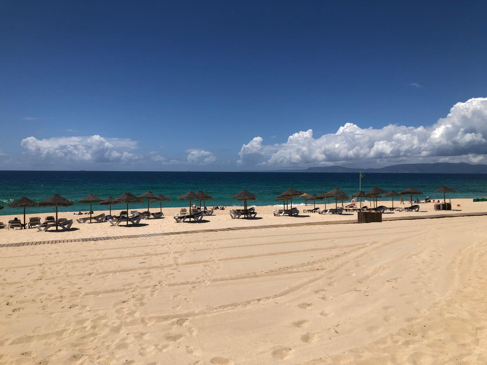
Praia da Comporta, June 2024. Contriblambda / Wikimedia Commons, CC0. Summer landscape illustration; not winter-weather evidence.Beach entrance at Praia do Carvalhal, Grândola. 2020-08-22 09:37. José Prego from Moura, Portugal / Commons, CC BY 2.0.
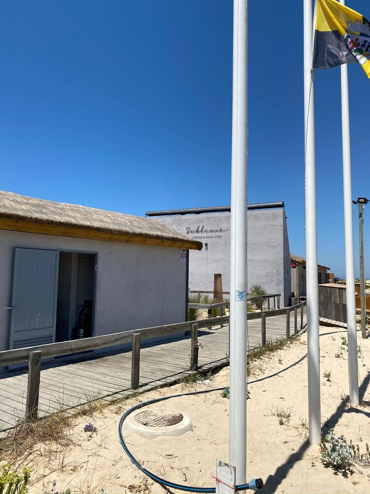
Beach club on Praia do Carvalhal. Source date: 2020-08-19 23:57:18. Cristiano Tomás / Commons, CC BY-SA 4.0.
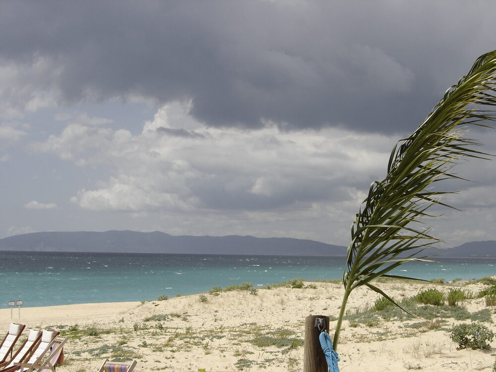
Comporta beach in May. Source date: Taken on 31 May 2008. augustoptm / Commons, CC BY-SA 3.0.
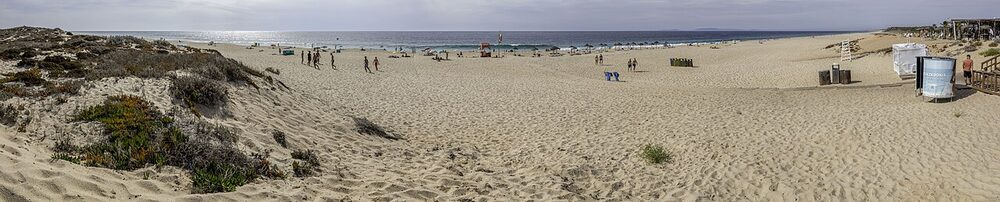
Panoramic view of Comporta beach. Source date: 2021-09-12 16:11:13. Diego Delso / Commons, CC BY-SA 4.0.
The atmosphere
The strongest pine-and-sand comparison with Cap Ferret. The appeal is landscape and villa style, but the distance between houses, villages and beaches makes daily life less straightforward.
British resort / expat influence
A fashionable international villa destination may also bring the conspicuous-luxury atmosphere the brief dislikes. No nationality mix or exact winter social scene has been measured.
Winter life
A varied winter dining circuit within walking distance of a garden house remains unproven. This is a style comparator rather than the leading winter recommendation.
Walking, dogs and the house
Check village, rental and beach as three separate pins. Cycling distance does not satisfy the walking requirement. Protected dunes and private tracks need access checks; no blanket dog-trail permission is established.
Temperature and journey: Sines is a coastal Alentejo reference farther south, not Comporta’s own station. Cooler afternoons and the measured route over 20 hours weaken the fit. Comporta 20h22 · over cap.
16.9 / 17.6°CJanuary / February average highsAlmería Airport · 1981–2010
Agua Amarga village and bay. Taken on 13 May 2008. isol / Commons, CC BY-SA 3.0.San José, Níjar, on the Cabo de Gata coast. 2011-08-20. Benreis / Commons, CC BY-SA 3.0.Agua Amarga beach. Source date: 2020-09-11. Nicolas Vigier / Commons, CC0.Agua Amarga from the railway hills. Source date: 2024-09-06 11:00:11. MdeVicente / Commons, CC0.Playa de los Genoveses near San José. Source date: 2018-11-02 11:12:38. José Antonio JG / Commons, CC BY-SA 4.0.
The atmosphere
A rugged, quieter village-scale alternative. It offers a different landscape from Cap Ferret’s pines and Atlantic sand; the food and social scene need as much scrutiny as the scenery.
British resort / expat influence
Quietness and small scale do not establish either a cosmopolitan scene or a particular nationality mix. The evidence does not justify presenting these villages as British-free.
Winter life
La Villa is an Agua Amarga restaurant lead; 4nudos is in San José. Published seasonal information has not established dependable January–February operation or enough choice for a long stay.
Walking, dogs and the house
These are separate villages. No complete house-and-garden match or legally verified everyday dog circuit has been established. Protected coast access needs checking before selecting a rental.
Temperature and journey: Almería averages 24 / 25mm of January / February rain, below most earlier reference stations. Low rainfall is not proof of a sheltered cove or warmer afternoons. Agua Amarga 20h04 · just over cap.
16.0 / 16.8°CJanuary / February average highsCádiz · 1981–2010
Conil de la Frontera town panorama. 2011-05-11. Aconcagua (talk) / Commons, CC BY-SA 3.0.The coves and cliffs of Roche, Conil. 2018-01-01 15:04:47. PEPE GADEIRAS / Commons, CC BY-SA 4.0.The broad beach at Zahara de los Atunes. 2015-11-06 17:35. Luis Rogelio HM / Commons, CC BY-SA 2.0.Castillo de las Almadrabas in Zahara de los Atunes. Source date: 2017-07-29 16:46:37. El Pantera / Commons, CC BY-SA 4.0.Río Cachón in Zahara de los Atunes. Source date: 2014-08. Jose Luis Filpo Cabana / Commons, CC BY 3.0.
The atmosphere
Conil town is the stronger ordinary Spanish-town hypothesis; Roche offers pinewoods and garden villas. Zahara has a town-edge house lead. Those are different daily experiences, not interchangeable addresses.
British resort / expat influence
Local character is an editorial assessment, not a verified visitor-nationality statistic. A private villa development can also lack the walk-out-for-dinner village life being sought.
Winter life
Zahara’s Pradillo has published 2026 year-round scheduling evidence, not confirmed 2027 dates. Conil’s restaurant leads and the immediate Roche dining walk still need winter checks.
Walking, dogs and the house
Conil’s published rules allow animals on urban beaches outside May–October, while natural beaches are prohibited without authorisation. Its animal ordinance requires dogs over 20kg to be muzzled with a resistant non-extending lead. Rules cannot be carried across to Zahara.
Temperature and journey: Atlantic wind shelter matters. Cádiz is a regional reference. The earlier property leads still need exact pins, garden boundaries, heating and open-restaurant walks verified. Conil 20h55 · over cap.
13.2–13.3 / 13.5–13.8°CJanuary / February average highsNice and Toulon · 1991–2020
Menton's old town and church above the Mediterranean. 2018-08-25 20:14:10. Prekmarg / Commons, CC BY-SA 4.0.Port du Niel, Giens peninsula, in Hyères. 2017-03-30. Tangopaso / Commons, Public domain.
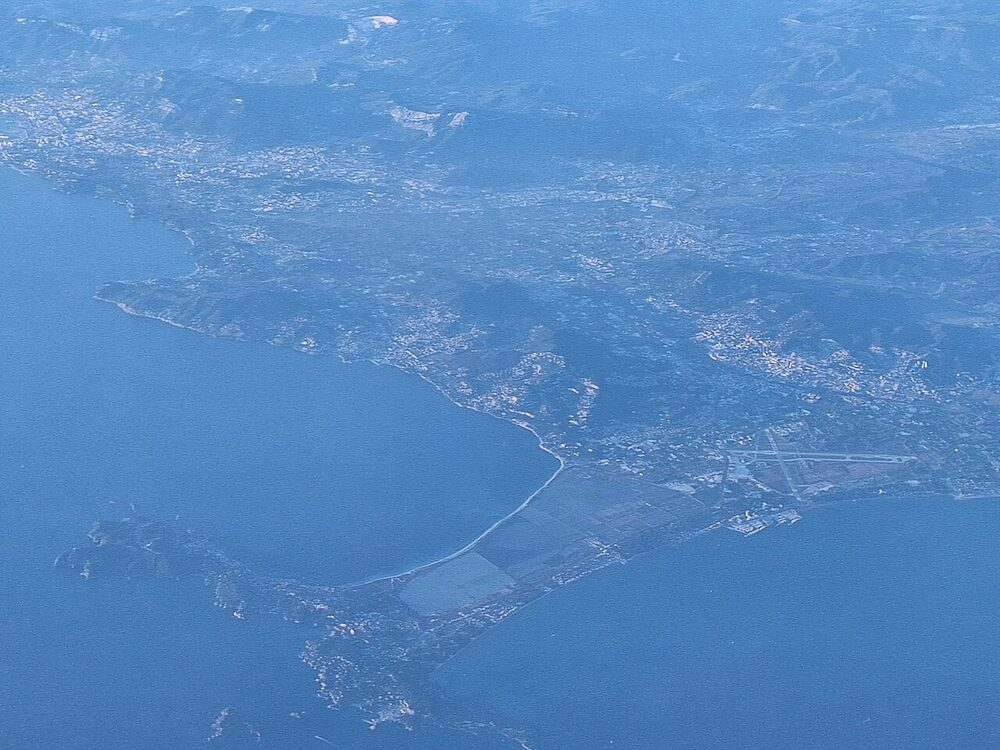
Giens peninsula and Hyères from the air. Source date: 29 December 2025 (according to Exif data). Steffen Mokosch / Commons, CC BY-SA 4.0.
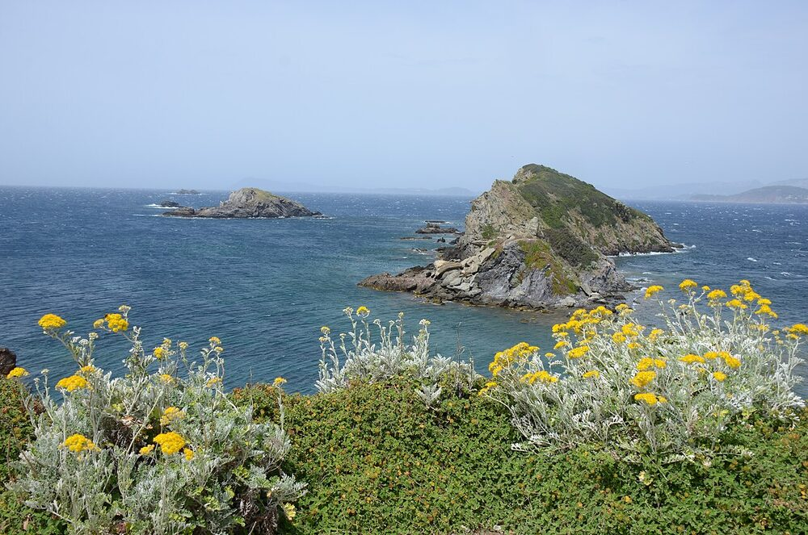
Western Giens peninsula: Île Longue and Île de la Ratonnière. Source date: Taken on 21 May 2014. Henk Monster / Commons, CC BY 3.0.
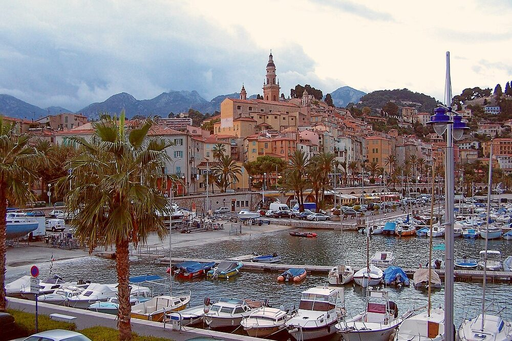
Menton old town and harbour. Source date: 4 October 2005 (according to Exif data). Berthold Werner / Commons, Public domain.
The atmosphere
Menton is an urban Franco-Italian Riviera option, with old-town and seafront life. Giens is the stronger landscape analogy: a wooded peninsula, sandbars and saltmarshes. They are separate alternatives, not neighbouring parts of one base.
British resort / expat influence
No reliable nationality mix has been established. Their appeal here is the physical setting and different town character, not a guarantee about who visits.
Winter life
Menton’s Bistrot des Jardins is listed as open all year, but does not accept animals. L’Endroit advertises year-round restaurant service in coastal Hyères, not Giens village; other beach services are seasonal.
Walking, dogs and the house
Menton identifies designated dog areas at Gorbio, Casino and Hawaï. Hyères’ Mérou dog beach is separate from Giens. Do not generalise these permissions to every beach, dune or protected path.
Temperature and journey: Nice: 13.3 / 13.5°C. Toulon: 13.2 / 13.8°C. These regional references make the warmth compromise clear; no Menton microclimate bonus is invented. Menton 11h56 · Hyères 10h49.
Monthly figures unverifiedJanuary / February average highsWinter aggregate context below
Two waterfront views of Bordighera. The source is a two-panel collage. 9 December 2022 (according to Exif data). Al*from*Lig / Commons, CC BY-SA 4.0.
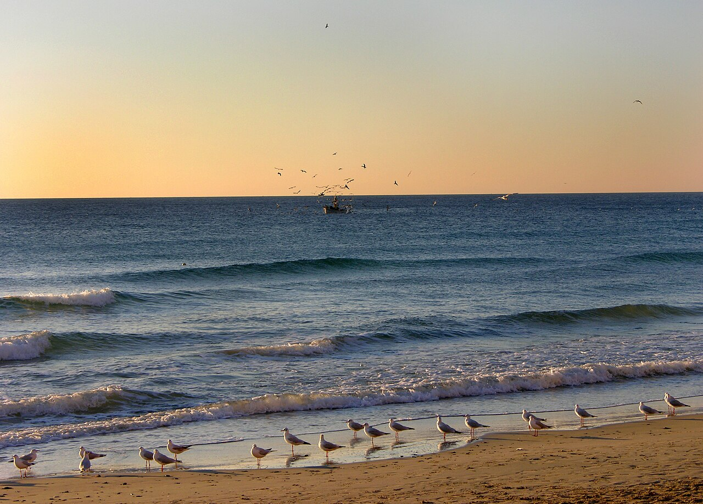
Alassio beach at sunrise, with fishing boat and gulls. Taken on 16 October 2006, 08:23:08. Martina Rathgens / Commons, CC BY 2.0.
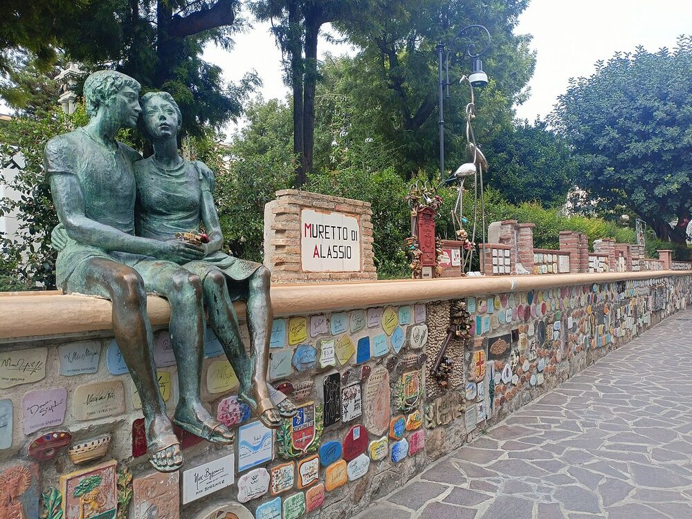
Alassio's decorated Muretto wall. Source date: Taken on 13 September 2022. Ashoppio / Commons, CC BY-SA 4.0.
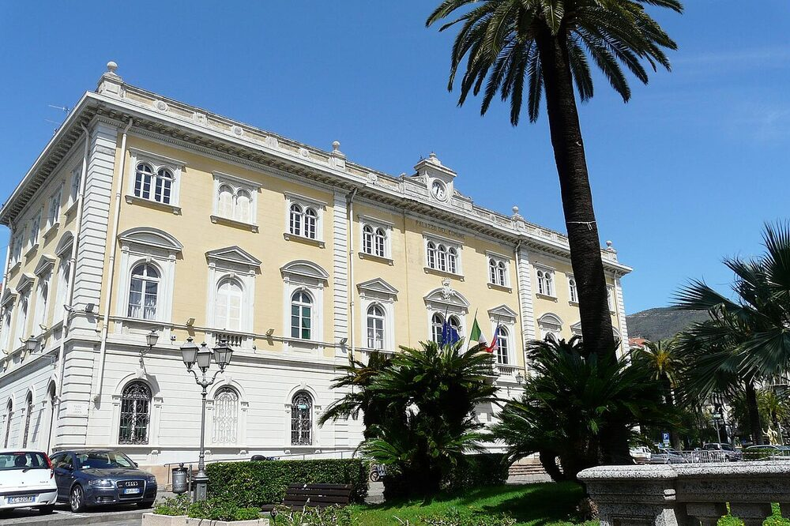
Alassio town hall. Source date: Taken on 19 April 2008. Davide Papalini / Commons, CC BY-SA 3.0.
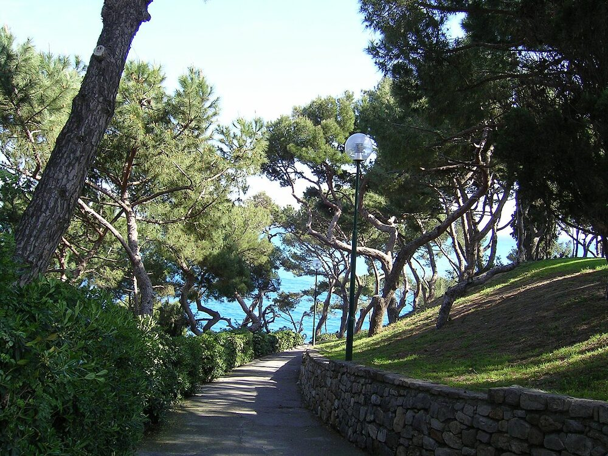
Via Stella Maris, Bordighera. Source date: 2006-09-15. w:it:utente:Racchets / Commons, CC BY-SA 3.0.
The atmosphere
Bordighera’s lower-town promenade offers older Riviera character; Alassio is the denser sandy-beach town alternative. These are plausible Italian options for atmosphere and a shorter drive.
British resort / expat influence
No measured British share or winter street-atmosphere survey was found. The recommendation rests on town form and coastline, not nationality assumptions.
Winter life
Magiargè in Bordighera is a concrete restaurant lead; winter opening remains unconfirmed. A full January–February dining circuit and qualifying rental still need checking.
Walking, dogs and the house
Alassio’s official FAQ permits dogs on beaches outside May–September, subject to current rules; it does not imply off-lead permission. Hillside garden houses may mean steep walks home.
Temperature and journey: ARPAL’s 1961–2010 dataset gives December–February mean daily highs of 14.3°C at Sanremo, 13.0°C at Imperia and 12.3°C at Alassio. These seasonal values must not be presented as separate January and February normals. Bordighera 12h05 · Alassio 12h08.
11.5–12.8 / 12.6–13.7°CJanuary / February average highsPisa and Grosseto · 1991–2020
Castiglione della Pescaia from its eastern beach. Source supplies upload date, not confirmed capture date. 8 December 2008 (upload date). Petitverdot: Matteo Vinattieri / Commons, CC BY 3.0.
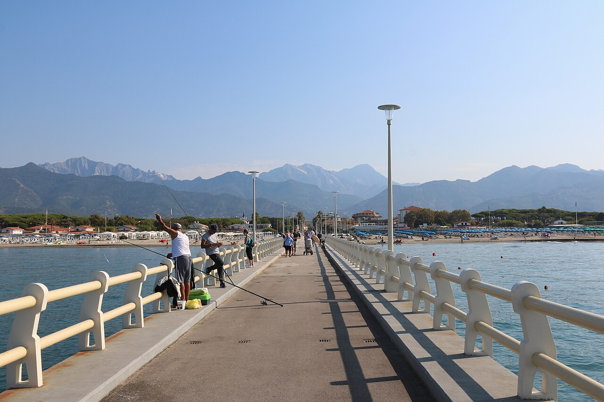
Forte dei Marmi pier looking towards the mountains. 2021-09-09 09:12:15. Ingo Mehling / Commons, CC BY-SA 4.0.
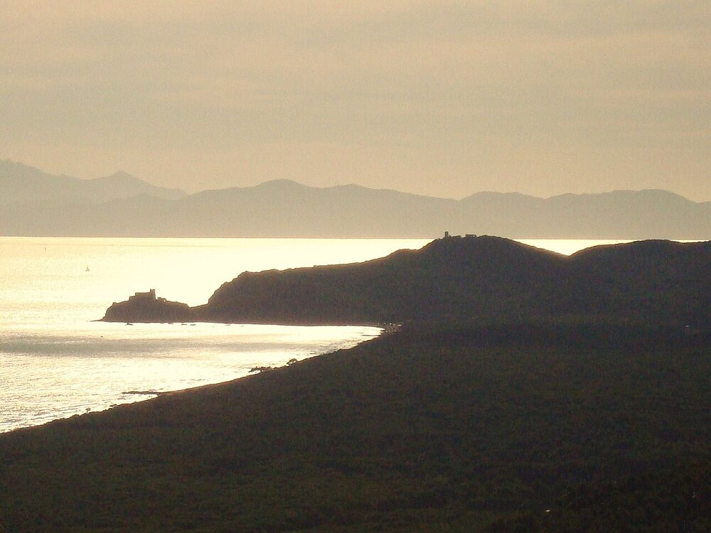
Rocchette coastline, Castiglione della Pescaia. Source date: Not supplied. User:Alienautic / Commons, CC BY 3.0.
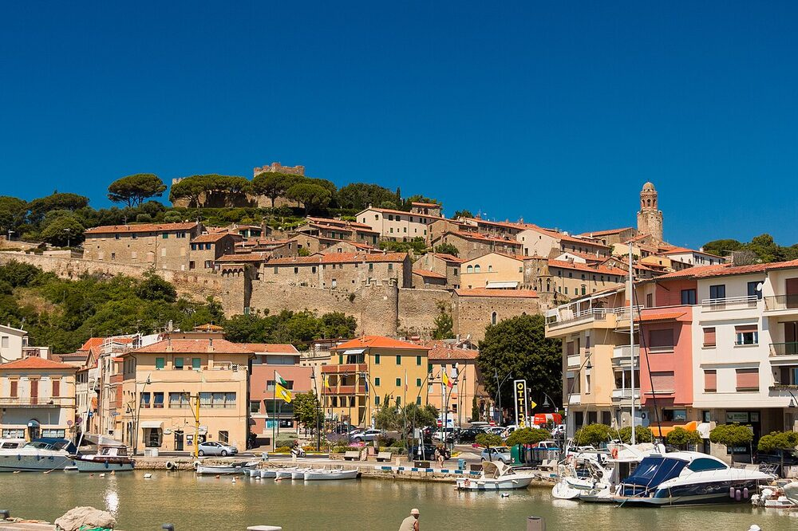
Castiglione della Pescaia. Source date: 2013-06-19 11:23. Johannes Gilger from Aachen, Deutschland / Commons, CC BY-SA 2.0.
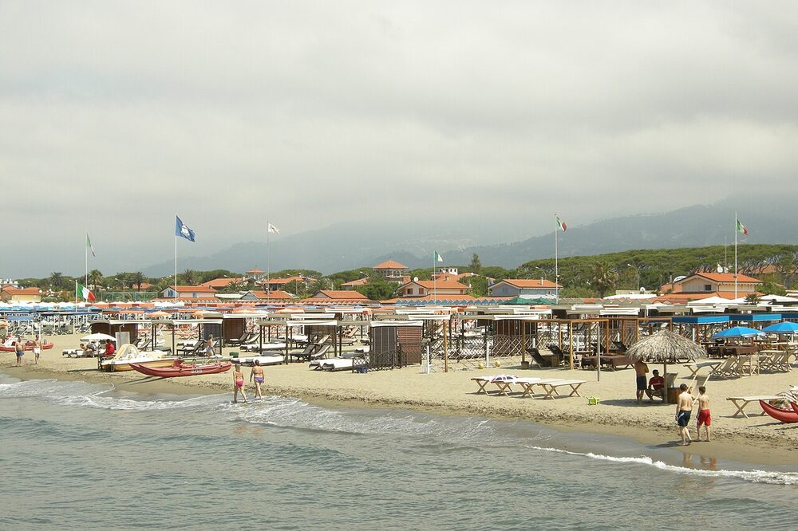
Forte dei Marmi beach. Source date: 2013-06-15 12:21:56. DV / Commons, CC BY-SA 3.0.
The atmosphere
Castiglione is the better Tuscan landscape match: medieval town, beaches and nearby pinewoods. Forte dei Marmi adds luxury boutiques and villas, which may conflict with the understated preference.
British resort / expat influence
The question here is overall style and winter comfort. There is no verified nationality comparison, and luxury marketing does not establish the atmosphere wanted.
Winter life
Specific restaurant leads exist, but winter dining breadth and annual closures remain unresolved. Average overnight lows around 3°C make heating a serious house requirement.
Walking, dogs and the house
No fully qualifying garden-house, dog-access and restaurant-walking combination has been verified. A Tuscan beach photograph is not evidence of winter access or winter services.
Temperature and journey: Grosseto: 12.8 / 13.7°C; Pisa: 11.5 / 12.6°C. Tuscany fits the driving range, but is a substantial warmth compromise for this particular stay. Castiglione 14h38 · Forte 13h01.
Private house with an exclusive garden, with boundaries checked.
Roughly 15 minutes’ real walk to open restaurants and coast, including gradient and pavements.
Written pet acceptance, effective heating, and a sunny sheltered outdoor space.
Confirmed winter availability, total long-stay price, utilities and cancellation terms.
Evidence still missing
No property has passed all those checks. Advertised “pets allowed”, “garden” or “near beach” does not prove the full fit. River and lagoon access remain distinct from an ocean beach.
There are four earlier house leads, with their shortcomings recorded. No booking or provider enquiry has been made.
Climate references come from AEMET, IPMA, Météo-France, LaMMA and ARPAL. Periods and station locations are shown because these are not exact town forecasts. Liguria’s winter aggregate is kept separate from monthly normals. Official town sources and restaurant websites support practical details; atmosphere judgments remain interpretations.
Individual links sit beside the claims. The earlier detailed report retains full route, dog-rule and house-lead context. Restaurant evidence from 2026 does not guarantee 2027 opening. No reliable winter visitor-nationality survey was established.
All images are real location photographs with source and licence attribution. Display proportions are preserved. Full photograph credits.


{kind=link}
{kind=link}
.jpg){kind=link}
.jpeg){kind=link}
{kind=link}
{kind=link}
{kind=link}
{kind=link}
{kind=link}
{kind=link}
{kind=link}
{kind=link}
{kind=link}
.jpg){kind=link}
{kind=link}
{kind=link}
.jpg){kind=link}
{kind=link}
{kind=link}
{kind=link}
{kind=link}
.jpg){kind=link}
{kind=link}
{kind=link}
{kind=link}
{kind=link}
{kind=link}
.jpg){kind=link}
{kind=link}
{kind=link}
.jpg){kind=link}
.jpg){kind=link}
{kind=link}
{kind=link}
{kind=link}
{kind=link}
{kind=link}
{kind=link}
{kind=link}
{kind=link}
{kind=link}
{kind=link}
.JPG){kind=link}
{kind=link}
{kind=link}